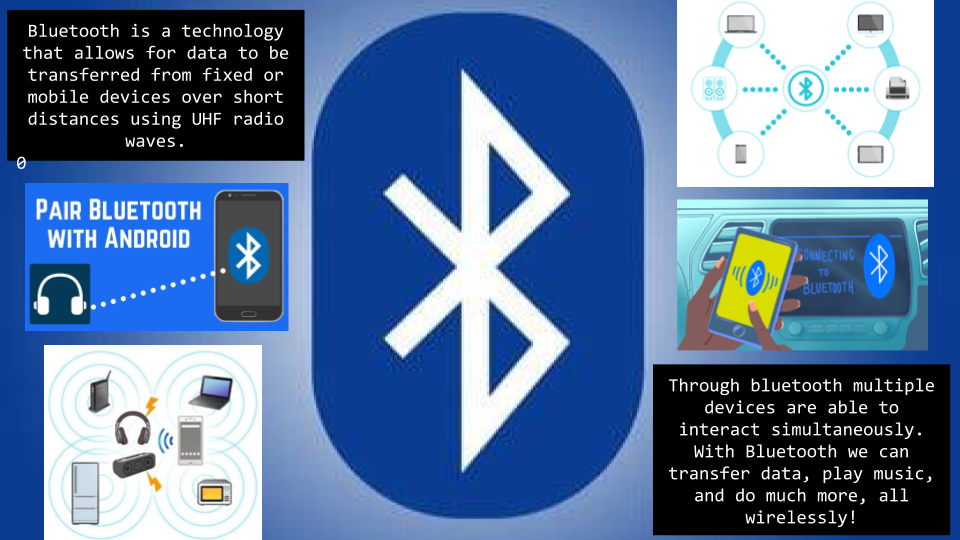

Home Portfolio About me
In this project we learned the basic movements of a robot and the logic used in Comp Sci.
In our scratch game you are trying to avoid bullets. You have 3 lives and a timer keeps track of your time.
The bullets spawn randomly throughout the grid.

In this project we took blocks of code and created a playable app. For me and my partners app, we created a Duck Hunter game. In the
game a duck randomly moves on a plain and the player drags a tank with a drag bar and taps a fire button to try and hit the duck.
The app also keeps score of the amount of times you hit the duck.

Our next project was to create a game of life scenerio. The game takes you through your life giving you options to do
different things and make different choices.

In this project the task was to pick a technological advancement and descibe it and its impact on society.
In this simulation we changed the direction that the person is
walking and what color the flowers are. We did this by editing
the code and changing the colors in the lines of code that
generated the flowers. Then we changed the persons direction
by making him spawn at 180 degrees instead of 90 degrees.